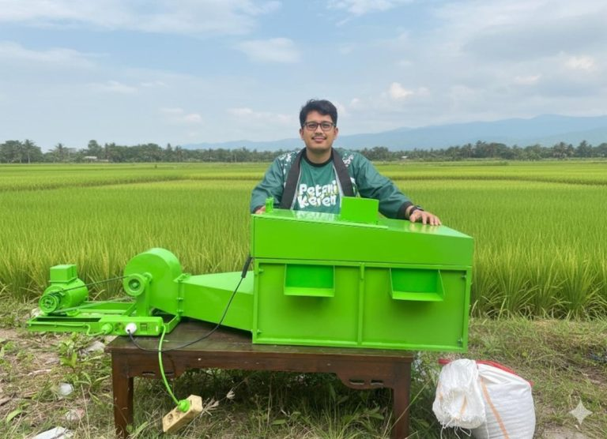

Alumni ITERA Berhasil Kembangkan Inovasi Alat Pengering Hasil Pertanian Portabel
ITERA NEWS – Alumni Program Studi Teknik Geologi Institut Teknologi Sumatera (Itera), Erza Refenza, berhasil menciptakan inovasi alat pengering hasil panen portabel yakni Hexaust Bed Dryer dan Portable Solar Bed Dryer Reka Agro Indonesia. Inovasi ini diharapkan menjadi solusi modern bagi petani Lampung dalam menghadapi permasalahan pascapanen, terutama kendala pengeringan hasil pertanian seperti gabah, jagung, dan lainnya karena cuaca.
Erza mengatakan, selama ini, mayoritas petani masih mengandalkan metode tradisional dengan menjemur gabah dan hasil pertanian lain menggunakan sinar matahari. Cara tersebut sangat bergantung pada kondisi cuaca dan sering menimbulkan kerugian, baik dari segi waktu maupun kualitas hasil panen.
Alat ini dirancang praktis dan mudah dipindahkan sehingga dapat digunakan langsung di lahan pertanian. Dari segi efisiensi, teknologi ini mampu mempercepat proses pengeringan hasil panen, sehingga petani tidak lagi khawatir kehilangan waktu akibat cuaca yang tidak menentu.
Hasil panen yang dikeringkan dengan teknologi ini menjadi lebih merata dan berkualitas, sehingga dapat dipasarkan dengan harga lebih baik. Penggunaan energi yang lebih hemat dan ramah lingkungan menjadikan inovasi ini selaras dengan kebutuhan pertanian berkelanjutan.
Inovasi ini merupakan bentuk kontribusi untuk mendukung produktivitas petani dan memperkuat ketahanan pangan daerah. Erza menambahkan, bahwa generasi muda Lampung mampu melahirkan teknologi tepat guna bagi negeri.